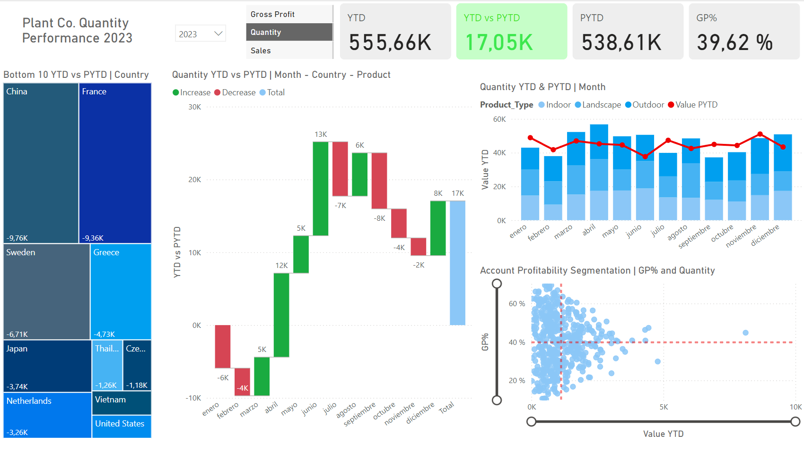
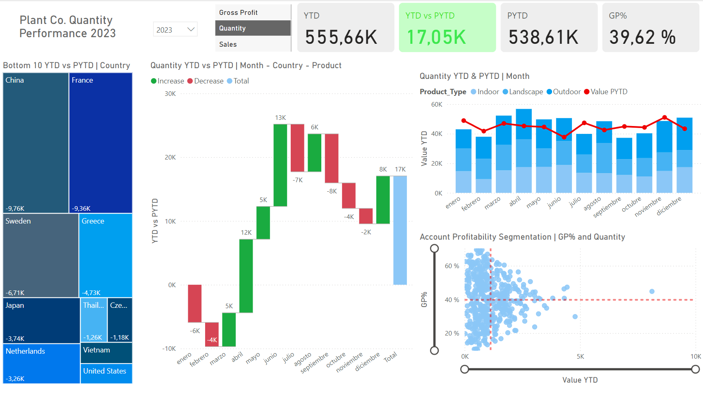

Plant Co. Performance Report
This Power BI report provides a detailed analysis of Plant Co.'s performance across various dimensions, showcasing key metrics and trends through interactive visualizations.
Data Science student skilled in Excel and Power BI, Python, Tableau and SQL.
This Power BI report provides a detailed analysis of Plant Co.'s performance across various dimensions, showcasing key metrics and trends through interactive visualizations.
A Python project where I perform a descriptive and exploratory analysis of a dataset.
A Python project where I utilize a CSV file to find and handle missing data, and perform normalization.
R project where I use the dataset from a retail store to perform a preliminary analysis of the data.
R project where we use a wine dataset to perform a technical application of variable reduction.
R project in which we explore a dataset and find correlations between the variables.

A Power BI report that presents a comprenhensive analysis of a survey conducted among data professionals. The surveys aims to provide insights into various aspects of their careers, experiences, skills and satisfaction levels.